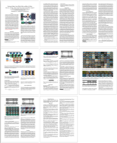

Underwater Ranker:
Learn Which Is Better and How to Be Better
School of Information Engineering, Henan Institute of Science and Technology,
S-Lab, Nanyang Technological University
Meterials
|  |

|
|
|
Paper |
Dataset (pwd: nuin) |
Codes |
Abstract
In this paper, we present a ranking-based underwater image quality assessment (UIQA) method, abbreviated as URanker. The URanker is built on the efficient conv-attentional image Transformer. In terms of underwater images, we specially devise (1) the histogram prior that embeds the color distribution of an underwater image as histogram token to attend global degradation and (2) the dynamic cross-scale correspondence to model local degradation. The final prediction depends on the class tokens from different scales, which comprehensively considers multi-scale dependencies. With the margin ranking loss, our URanker can accurately rank the order of underwater images of the same scene enhanced by different underwater image enhancement (UIE) algorithms according to their visual quality. To achieve that, we also contribute a dataset, URankerSet, containing sufficient results enhanced by different UIE algorithms and the corresponding perceptual rankings, to train our URanker. Apart from the good performance of URanker, we found that a simple U-shape UIE network can obtain promising performance when it is coupled with our pre-trained URanker as additional supervision. In addition, we also propose a normalization tail that can significantly improve the performance of UIE networks. Extensive experiments demonstrate the state-of-the-art performance of our method. The key designs of our method are discussed.
Method
Overview of the proposed URanker. The multi-scale features are generated by serial blocks and the cross-scale features are communicated in a parallel fashion. In each serial block, the tokenized features are combined with the histogram token from the HPM and the class token, and then processed by the conv-attention and feed-forward layer alternately. The final prediction is the average of the scores from different scales.
Overall of the proposed NU2 It is a residual network consisting of a stack of Conv-IN-ELU blocks. The normalization tail is followed at the end of the network.
Results
License
We retain all the copyrights of this method.
Citation
If you find our dataset and paper useful for your research, please consider citing our work:
@inproceedings{guo2023underwater,
title={Underwater Ranker: Learn Which Is Better and How to Be Better},
author={Guo, Chunle and Wu, Ruiqi and Jin, Xin and Han, Linghao and Chai, Zhi and Zhang, Weidong and Li, Chongyi},
booktitle={Proceedings of the AAAI conference on artificial intelligence},
year={2023}
}
Contact
If you have any question, please contact us via lichongyi25@gmail.com.